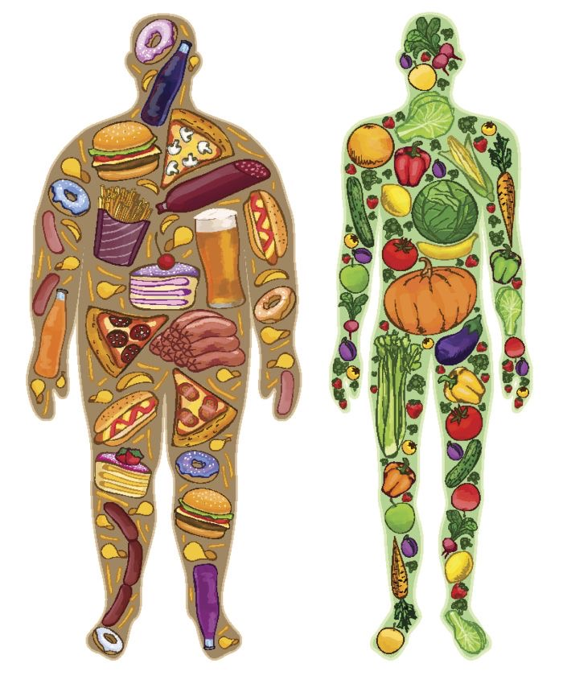

Construyendo hábitos para una mejor calidad de vida

La vida saludable consiste en adoptar hábitos que favorezcan el bienestar físico, mental y social. No se trata únicamente de evitar enfermedades, sino de mantener un equilibrio entre la alimentación, la actividad física, el descanso, la salud emocional y las relaciones con otras personas.
Una persona con hábitos saludables suele tener mayor energía para realizar sus actividades diarias, presenta un mejor rendimiento escolar o laboral y disminuye considerablemente el riesgo de desarrollar enfermedades crónicas como obesidad, diabetes, hipertensión y problemas cardiovasculares.
Mantener un estilo de vida saludable permite que el organismo funcione correctamente. Los buenos hábitos fortalecen el sistema inmunológico, mejoran la circulación sanguínea, favorecen el crecimiento y ayudan al correcto funcionamiento del cerebro.
La Organización Mundial de la Salud señala que millones de enfermedades podrían prevenirse mediante una alimentación equilibrada, actividad física frecuente y evitando el consumo de tabaco, alcohol y bebidas con exceso de azúcar.
Consumir frutas, verduras, cereales integrales, proteínas y suficiente agua.
Realizar al menos 30 minutos de ejercicio cinco días por semana.
Dormir entre siete y nueve horas para recuperar energía.
Controlar el estrés, convivir con la familia y expresar las emociones.
Adoptar hábitos saludables ayuda a disminuir el riesgo de desarrollar enfermedades como:
Promover una vida saludable es responsabilidad de todos. Adoptar pequeños cambios diarios, como beber más agua, realizar ejercicio, consumir alimentos naturales y cuidar la salud emocional, puede marcar una gran diferencia en nuestra calidad de vida. La prevención siempre será la mejor herramienta para disfrutar de una vida más larga, activa y plena.